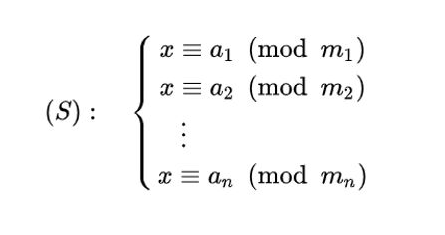
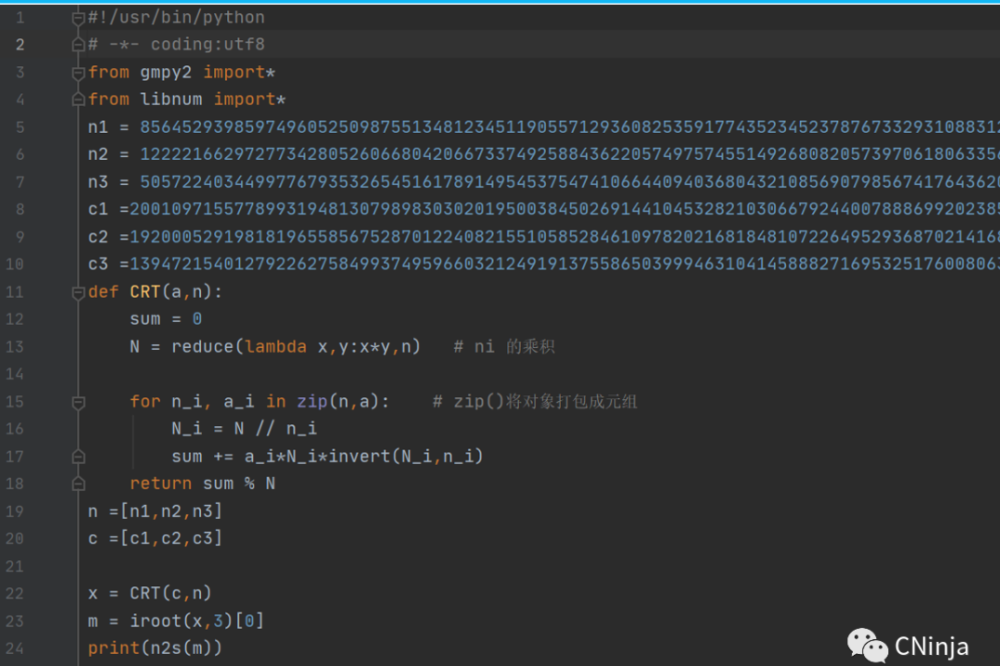

1.素数：
定义：
一个大于1的自然数，除了1和它本身外，
不能被其他自然数整除（除0以外）的数称之为素数（质数）；
否则称为合数。
如：
3×4 = 12,不是素数。
11除了等于11×1以外，不能表示为其它任何两个整数的乘积，
所以11是一个素数。
关于素数有以下事实：
|
|
(2)(算术基本定理) 每个整数n ≥ 2，均可分解成素数幂之积：
$$n = P_1^{e_1} P_2^{e_2}…P_k^{e_k}$$
若不计因数的顺序，这个分解式是唯一的。其中 k ≥ 1，$p_i$ $(1 ≤ i ≤ k)$ 是两两互不相同的素数，$e_i$ $(1 ≤ i ≤ k)$ 是正整数。
(3) 素数有无穷多个。
2.最大公约数与最小公倍数
定义 1：
设 $a_1，a_2$ 是两个整数。如果 $d | a_1$ 且 $d | a_2$，那么 d 就称为是 $a_1$ 和 $a_2$ 的公约数（或公因数）我们把 $a_1$ 和 $a_2$ 的公约数中最大的称为 $a_1$ 和 $a_2$ 的最大公约数，记作 $gcd(a_1,a_2).$
当 $gcd(a_1,a_2) = 1$ 时，我们称 $a_1$ 和 $a_2$ 是互素的。
定义 2：
设 $a_1，a_2$ 是两个整数。如果 $a_1 | l 且a_2 | l$ ，那么 $l$ 就称为是 $a_1$ 和 $a_2$ 的公倍数。我们把 $a_1$ 和 $a_2$ 的正的公倍数中的最小的称为 $a_1$ 和 $a_2$ 的最小公倍数，记作 $lcm(a_1,a_2)。$
3.欧拉函数
定义：
对正整数 $n$，欧拉函数是小于或等于 $n$ 的数中与 $n$ 互质的数的个数，
记作：$φ(n)$
例如：$φ(8) = 4$ ,因为 $1，3，5，7$ 均与 $8$ 互质。
性质：
(1) 若 $n$ 为一素数 P，则：$φ(P) = P-1$
(2) 如果 P 是素数，$k≥1$ ,则：$φ(P^k)$ = $(P-1)× P^{k-1}$
例如 ：求 φ(16)，由于 16 = 2×2×2×2，故 φ(16) = (2-1) ×$2^3$ = 8
(3) 若 n 为任意两个互质的 数 $a,b$ 的积，则：φ(a*b) = φ(a) × φ(b)
例：求 φ(40)，由于 40 = 5×8，所以 φ(40) = φ(5) × φ(8) = 4×4 = 16
(4)对于整数 $n≥2$，根据算术基本定理，$n$ 可以分解成唯一的形如 $n=p_1^{e_1}$$p_2^{e_2}$ ⋯$p_k^{e_k}$ 的分解式，则：$φ(n)=n(1-\frac{1}{p_1})(1-\frac{1}{p_2})⋯(1-\frac{1}{p_k})$
4.欧几里得(Euclid)算法
定义：
欧几里得算法又称为辗转相除法，用于求两个数的最大公约数。
原理：$GCD(x,y)$ = $GCD$($y$，$x$ $mod$ $y$) ，$x>y$
1.python 代码实现
|
|
2.python 第三方库：
gmpy2.gcd(a,b) #求 a,b 的最大公约数
|
|
Crypto.Util.number
|
|
5.扩展欧几里得算法
定义：
在已知 $x，y$ 时，求解一组解 $a,b$，使得 $ax+by = GCD(x，y)$
算法输入：两个正整数 $x$ 和 $y$
算法输出：$x$ 和 $y$ 的最大公因数 $gcd(x,y)$ 及满足等式 $ax+by=gcd(x,y)$ 的整数 $a$ 和 $b$
python 代码实现:
gmpy2 库函数 gcdext()
|
|
6.同余
定义：
设 a,b 是整数，$n≠0$，如果 $n|(a-b)$，则称 $a$ 和 $b$ 模 $n$ 同余，记为 $a≡b$($mod$ $n$)，整数 $n$ 称为模数。
由于 $n|(a-b)$ 等价于 $-n|(a-b)$，所以 $a≡b$($mod$ $n$) 与 $a≡b$ $($ $mod$ $(-n)$ $)$ 等价。因此，一般我们总假定模数 $n≥1$。
同余的性质
性质 1：
(1)自反性：a ≡ a (mod m)
(2)对称性：a ≡ b (mod m)， b ≡ c (mod m) ，则 a ≡ c (mod m)
性质 2：
(1) 若 $a ≡ b$ ($mod$ $m$)，$c ≡ d$ ($mod$ $m$)
则：$a±c ≡ b±d$ ($mod$ $m$)，$ac ≡ bd$ ($mod$ $m$)
特别的，对于一个整数 e,都有 $a±e ≡ b±e$ ($mod$ $m$)，$ae ≡ be$ ($mod$ $m$)
(2) 若 $a ≡ b$ ($mod$ $m$)，k>0，则 $ak ≡ bk$ $(mod$ $mk)$
(3) 若 $a ≡ b$ ($mod$ $m$)，d 是 a，b 的公因数，则 $\frac{a}{d} ≡ \frac{b}{d}$ (mod $\frac{m}{d}$)
(4) 若 $a ≡ b$ ($mod$ $m$)，d|m，d>0，则: a ≡ b (mod d)
(5) 若 $a ≡ b$ ($mod$ $m$)，则: $a^n$≡$b^n$ (mod m)
(6) $(a×b)$ $mod$ $m$ = ($a$ $mod$ $m × b$ $mod$ $m$ ) $mod$ $m$
(7) $a^b$ $mod$ $m$ = ($a$ $mod$ $m$)$^b$ $mod$ $m$
7.模运算
定义：
$a$ 模 $n$ 的运算给出了 $a$ 对模 $n$ 的余数，这种运算称为模运算。注意：模运算的结果是从 0 到 $n-1$ 的一个整数。
模运算就像普通的运算一样，它是可交换、可结合、可分配的。而且，对每一个中间结果进行模 $m$ 运算后再进行模 $m$ 运算，其作用与先进行全部运算，然后再进行模 $m$ 运算所得到的结果是一样的。例如：
$$(a+b) mod m=((a mod m)+(b mod m)) mod m$$
$$(a-b)mod m=((a mod m)-(b mod m)) mod m$$
$$(a×b)mod m=((a mod m) ×(b mod m)) mod m$$
$$(a×(b+c))mod m=((a×b) mod m+(a×c) mod m) mod m$$
这些性质对于密码学中的数学计算非常的重要，模运算可以将所有中间结果和最后结果限制在一个范围内。对于一个 $k$ 位的模数 $n$ ，任何、加、减、乘的中间结果将不会超过 $2k$ 位长，这样避免了巨大的中间结果，使得计算机能够有效的处理数据。
如：计算 $a^8$(mod n)，不要直接进行 7 次乘法和一个大数的模运算：
$$(a×a×a×a×a×a×a×a)mod n$$
相反，应该进行三次比较小的乘法和三次比较小的模化简：
(($a^2$ mod n)$^2$ mod n)$^2$ mod n
这样就可以避免巨大的中间结果出现。
8.逆
定义：
若 m≥1，$gcd(a,m)=1$,则存在 c 使得：
$$ca≡1(mod m)$$
我们把 c 称为 a 对模 n 的逆，记作 $a^{-1}$ (mod m)，在模数已经指明的情况下，有时也记作 $a^{-1}$。
在(a,m)=1 时，我们可以使用扩展欧几里得算法来求 a 的逆元：$a^{-1}$，这是因为：扩展欧几里得算法可以找到整数 $x$,$y$ 使得 $ax+my=1$，这样 $a^{-1}=x$ ($mod$ $n$)
9.中国剩余定理
中国剩余定理（Chinese remainder theorem，CRT），又称孙子定理，最早可见于中国南北朝时期（公元 5 世纪）的数学著作《孙子算经》中，为一次同余方程组的起源。
定理(CRT):
设 $m_1,m_2,⋯, m_k$ 是两两互素的正整数，$M=m_1 m_2⋯m_k,$
$M_i=\frac{M}{m_i} (i=1,2,⋯,k)$,则同余方程组：

有唯一解: $x=b_1 M_1 y_1+b_2 M_2 y_2+⋯+b_k M_k y_k$ ($mod$ $M$)
其中 $M_i y_i≡1$ ($mod$ $m_i$)，i=1,2,⋯,k
代码实现：

10.逆元与同余式定理
| 1.模运算重要公式： |
(a+b) % m = (a % m + b % m) % m
(a-b) % m = (a % m - b % m) % m
(a*b) % m = (a % m * b % m) % m
$a^b$ % m = (a % m)$^b$ % m
| 2.威尔逊定理： |
若 p 为素数，则：$(p-1)!≡-1$ $mod$ $p$ ⟹ 推导：$(p-2)!≡1$ $mod$ $p$;
其逆定理同样成立。即：若 $(p-1)!≡-1$ $mod$ $p$ ，则 p 为素数
| 3.二次探测定理： |
定义：
若 $p$ 是素数且 0<x<p ，则 $x^2$≡$1(mod p)$ 仅有的两个解为：$x=1或x=p-1$
证明：由于 $x^2$≡$1$ $mod$ $p$，所以：$x^2$-1≡$0$ $mod$ $p$，即 $(x+1)(x-1)≡0$ $mod$ $p$
| 4.费马小定理 |
若 a 为正整数，P 是一质数，则：GCD(a,p)=1
那么 $a^{p-1}$ ≡ $1 (mod p)$，推论:$a^p$ $mod$ $m$≡$a^p$ $^ {mod}$ $^{(m-1)}$
$a^p$≡$a$ $mod$ $p$，推论: $a^p$ $mod$ $p$=$a$ $mod$ $p$
| 5.欧拉定理(Euler)： |
若 a 与 m 互质，则：$a^{φ(m)}$ ≡1 mod $m$